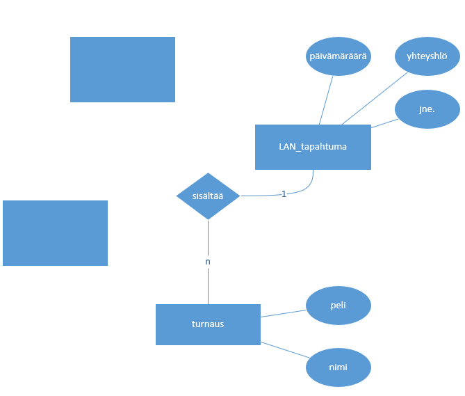
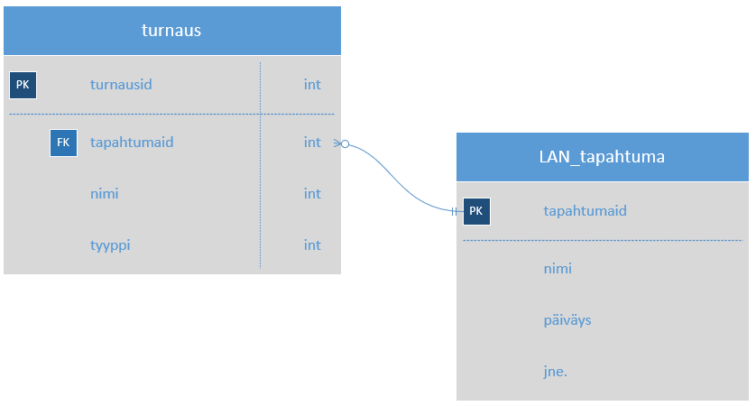

Tietokantasuunnitelma
Mitä tietoja järjestelmässä pitäisi pystyä tallettamaan?
- Käyttäjiä: lukijoita (osallistuja), järjestäjä (ylläpitäjä)
- LAN-tapahtuman tiedot, näitä vuosittain 1-2 kpl, etusivulla mainostettaisiin seuraavaa tulevaa tapahtumaa
- ilmoittautujat valitsevat paikan, jotenkin pitäisi pystyä hallitsemaan tietyn LAN-tapahtuman vapaita ja varattuja paikkoja
- kuvagalleriaa pitäisi pystyä muuttamaan ylläpitonäkymässä
- osallistujat voivat osallistua yksilö- tai joukkueturnauksiin. mitä tauluja tämä vaatisi?
- Paikan valitseminen?
- kartta voi vaihtua vuosittain, käytännössä tapahtumalla pitäisi varmaan olla karttapohja jossa pöydät ja paikat numeroitu
- kun varataan paikka voidaan valita esim. alasvetovalikosta vapaa paikka
1. ER-kaavio
- Visiossa
- Tietokannan Chen-merkintätapa
- 1. Käsitteet (= taulut, entity): neliöt, mielellään sama nimi myös sitten seuraavassa kaaviossa (tietokantakaavio) ja myöhemmin tietokannassa
- 2. Yhteydet (= relaatiot): ensin viiva väliin, sitten timantti keskelle, lukumääräsuhde: 1 : n (tai 1 : m)
- 3. Ominaisuudet (= kentät, attribuutit): lisää kentät joita keksit, nämä usein täydentyvät matkan varrella, ei pääavainta eikä vierasavaimia!

2. Tietokantakaavio
- Visiossa Tietokannan kukonaskel-merkintätapa
- Saat tietotyypit näkyviin hiiren oikea / Näytä määritetyypit
